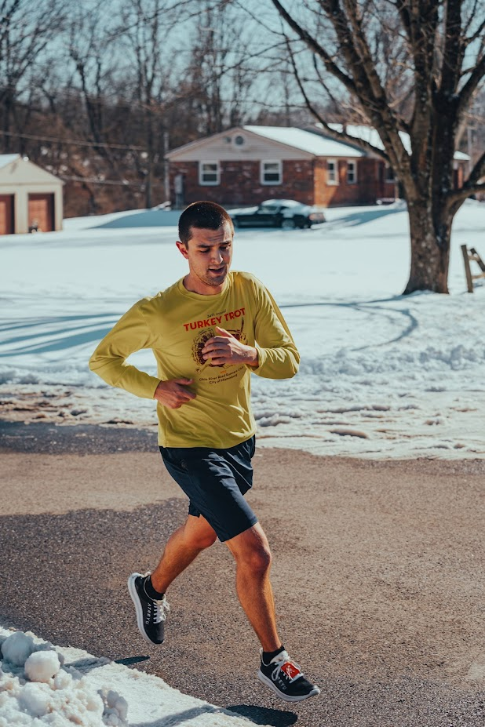

About Me
Education
I graduated from Wright State University in 2020 in the thick of covid with a Bachelor of Science in Computer Science
Professional
I am currently a software developer at Booz Allen Hamilton where I lead a frontend team of four on a mission critical government application used by more than a thousand people. Day to day that looks like mentoring, code reviews, pair programming, and architecture decisions alongside a cross functional group of around ten engineers. I've set our frontend coding standards, pushed for a real testing culture with automated coverage tracking, modernized a pile of legacy Vue components, and built accessible interfaces that meet WCAG and Section 508. I've also been the sole frontend developer on a greenfield application, working directly with analysts to learn the domain and turn it into something usable.
Before that I spent four years as a web developer at Reynolds and Reynolds, where I was the primary development support for the marketing team. I built five large decoupled React applications on top of Drupal, made SEO and Lighthouse performance a core focus across our production sites, wired Google Tag Manager tracking into our reusable components so marketing had consistent analytics, and maintained a component library shared across websites, single page apps, and React Native. I also wrote a lot of tooling on the fly to crush the tedious tasks that got handed to us.
In 2022 I started my own business creating websites for local businesses and organizations and have successfully launched 8 sites, designing on Adobe Illustrator, building with a decoupled React setup using NextJS and Gatsby sourcing content from Sanity, and launching through Netlify.

Personal
In my free time I enjoy getting out and being active. I've been pretty invested in running since high school and even coached in my hometown for a few years while in college. I really enjoy the bonds I have formed over the years while running with friends and students over the years. There is something special about pushing through and sharing pain while trying to achieve personal goals together. I often try to keep a routine of running races throughout the year. I also take a trip down to Gatlinburg with some friends every year to do some hiking as well as some weight lifting at a gym but I am relatively new to that.
I have a companion named Odie, he's an all black pug that is 1 year old. He loves going on rides and running around with other doggos! He is also probably one of the smartest dogs I have ever owned, which I would of never thought I would be saying that about a pug!
I also shoot film photography on a Nikon FM2. Everything about it is manual, so there is no burst mode to hide behind and no screen to check afterwards, which forces me to slow down and actually think about a shot before spending a frame on it. Waiting on a roll to come back is half the fun.
When the weather cooperates I take my 1986 Volkswagen Cabriolet out for weekend drives. It's old enough that something always needs attention, but there isn't much better than dropping the top and taking the long way home on back roads.
I'm also engaged to my fiancée Rashmi, who is Nepali, so learning the language has become a real part of my life. It's been humbling in the best way, and it's what led me to build my Learn Nepali app to help with studying the vocabulary I keep forgetting.
All in all I am always trying to try out new things and live life to the fullest, chances are if you talk to me I currently have something I am pretty invested in and trying to improve at because I'm never able to do anything halfway.
